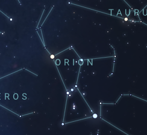
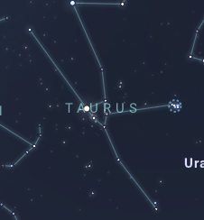
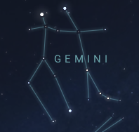
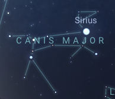
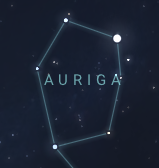
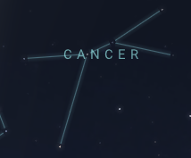

| Constellation | Description | Image |
|---|---|---|
| Orion | Orion, also known as the "Hunter", is one of the most recognizable constellations in the night sky. Its most noticeable feature is its belt, composed of three bright stars, with the red supergiant Betelgeuse to its north and the blue supergiant Rigel to its south. All of Orion's main stars are young and bright, making them super easy to spot. |  |
| Taurus | Taurus, also known as the "Bull", can be spotted to the right of Orion, and has a large two-pronged fork shape. Its brightest star is Aldebaran, and can be found in the "eye" of the bull. It is one of the zodiac constellations. |  |
| Gemini | Gemini, also known as the "Twins", features two bright stars: Pollux and Castor. They are the "heads" of the siblings and can be found to the northwest of Orion. It is one of the zodiac constellations. |  |
| Canis Major | Canis Major, also known as the "Great Dog", houses Sirius, the brightest star in the night sky. Sirius is located at the "neck" of the dog, and the constellation can be found southwest of Orion. |  |
| Auriga | Auriga, also known as the "Charioteer", is a small hexagonal constellation that sits beside Gemini. Its brightest star is Capella, and is fairly easy to spot. |  |
| Cancer | Cancer, also known as the "Crab", can be very hard to see because all of its stars are dim and it has no unique pattern. It is located north-west of Gemini, and is the faintest zodiac constellation. |  |
For more information, go to stellarium.org.
Back to top.
Copyright © 2023 Andrew Li